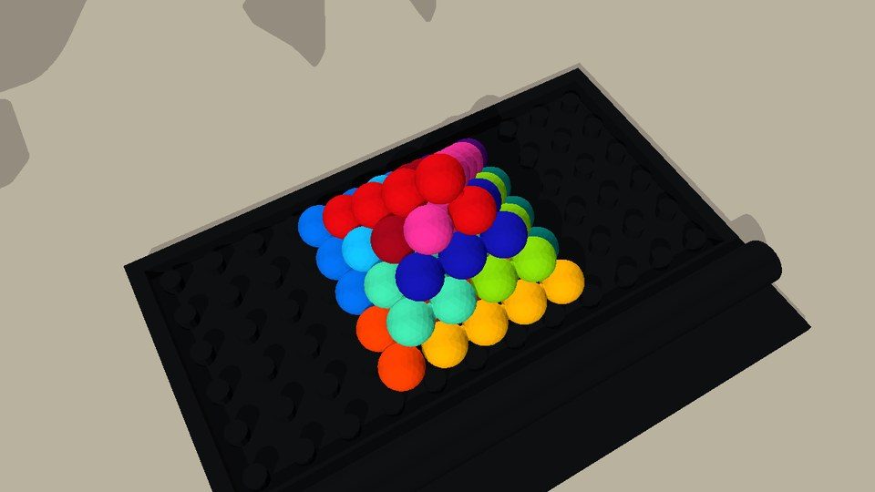
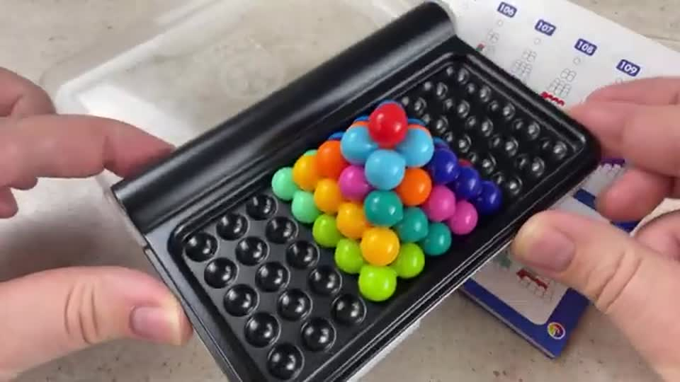

Cyan release · make the bead visible

65 mm11/13
75 mm13/13
80 mm13/13

RoboSimStudio workcell · Graph-as-Policy controller · inputs: four RGB cameras, joint encoders, part CAD.



t = 0.0 s
passed checkpointrunningerror exit → abort↻ bounded re-look inside the nodeClick a node or a colour bar to jump.


| Scene | What changed | v13 policy | This policy |
|---|---|---|---|
| Case moved and turned | case +6/-6 mm, +2.9° | 5/12 stopped at Cyancyan approach: Screened common-position regrasp proposals exhausted; donor remains closed | not run |
| Case moved and turned | case -6/+6 mm, -2.9° | 5/12 stopped at Cyancyan receiver transport: Actual bounded receiver views did not renew required environment RGB; donor remains withdrawn, do not home on old occupancy | not run |
| Loose pieces nudged | pieces ±5 mm, ±4° | 4/12 stopped at Purplerelease: Current accepted RGB contradicts the bounded held estimate | not run |
| Loose pieces nudged | pieces ±5 mm, ±4° | 4/12 stopped at Purplerelease: Current accepted RGB contradicts the bounded held estimate | not run |
| Lower friction | μ 0.50 | 5/12 stopped at Cyancyan receiver transport: Actual receiver attachment has no original-margin 3–10mm release | not run |
| Higher friction | μ 0.80 | 12/12 pieces seated, last node refusedFinal visual UNKNOWN requires the canonical explicitly enabled terminal execution scope | not run |
| All of the above | case -4/-4 mm, +1.7° · pieces ±3 mm, ±2° · μ 0.60 | 4/12 stopped at Purplerelease: Current accepted RGB contradicts the bounded held estimate | not run |
| Colors shuffled | colors permuted | 0/12 stopped at startperceive plan: Fresh RGB pose support is missing for ['azure'] | not run |
One fresh all-loose episode per row. The policy never receives these settings; it re-measures every pose from RGB. Jittered starts are rejection-sampled so no loose pieces overlap.